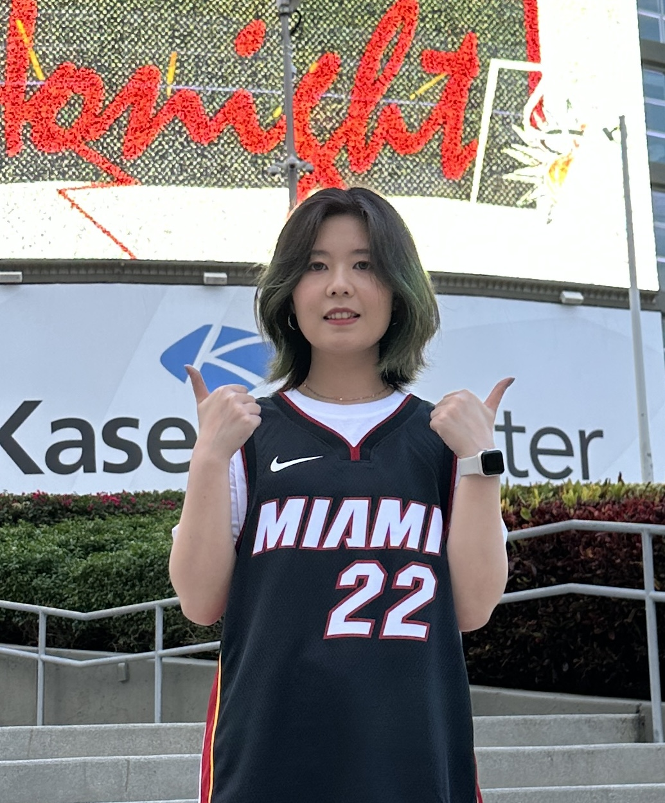

Shihui Song | 宋师慧
I will be joining the Department of Computer Science at Wayne State University as a Tenure-Track Assistant Professor starting from Fall 2026.
I received my Ph.D. in
Computer Science
from the
University of Iowa
(2026), advised by Dr. Peng Jiang.
I was also a visiting student at
Argonne National Laboratory ,
advised by Sheng Di , Robert Underwood , and Franck Cappello (2023 - 2026).
Before coming to UIowa, I earned my Master's degree in Computer Science from
Huazhong University of Science and Technology
(2021), and my Bachelor's degree in Software Engineering from
Jilin University
(2018).
My research focuses on emerging dataflow accelerators, AI systems, high-performance computing, data compression, and compiler design.
Ph.D. Openings: I am actively recruiting self-motivated Ph.D. students. If you are interested, please send me an email with your CV and a brief description of research interests.
Email: shihui-song@uiowa.edu
/
Google Scholar
/
LinkedIn

News
Aug. 2026 I am joining the Department of Computer Science at Wayne State University as an Assistant Professor.
Dec. 2025 Our P3Z compiler paper is accepted to IPDPS 2026 .
Oct. 2025 Received Rusty Lusk Travel Scholarship from ACM SIGHPC. Thanks for the support!
May 2025 Our CereSZ-II paper is accepted to IPDPS 2025 .
Selected Publications
Selected publications are listed below. Please see my Google Scholar for a complete list.
Designing Domain-Specific Compilers for Lossy Compression: A Case Study on Wafer-Scale Engine
Shihui Song , Robert Underwood, Sheng Di, Peng Jiang, and Franck Cappello[IPDPS 2026] IEEE International Parallel and Distributed Processing Symposium, 2026
A Memory-efficient and Computation-balanced Lossy Compressor on Wafer-Scale Engine
Shihui Song , Robert Underwood, Sheng Di, Yafan Huang, Peng Jiang, and Franck Cappello[IPDPS 2025] IEEE International Parallel and Distributed Processing Symposium, 2025
CereSZ: Enabling and Scaling Error-bounded Lossy Compression on Cerebras CS-2
Shihui Song , Yafan Huang, Peng Jiang, Xiaodong Yu, Weijian Zheng, Sheng Di, Qinglei Cao, Yunhe Feng, Zhen Xie, and Franck Cappello[HPDC 2024] The ACM International Symposium on High-Performance Parallel and Distributed Computing, 2024
Rethinking Graph Data Placement for Graph Neural Network Training on Multiple GPUs
Shihui Song , Peng Jiang[ICS 2022] In Proceedings of the 2022 International Conference on Supercomputing
Service
Program Committee Member / Reviewer
HPCAsia'27
PPoPP'26 (AD/AE)
Conference External Reviewer
ICLR'23, 24
NeurIPS'23, 24
ICML'22, 23, 24
IPDPS'21
Volunteer
SIGHPC in SC Conference, 2023
Honors and Awards
Rusty Lusk Travel Scholarship, ACM SIGHPC, 2025
IPDPS Student Travel Grant, IEEE TCPP, 2025
Copied!